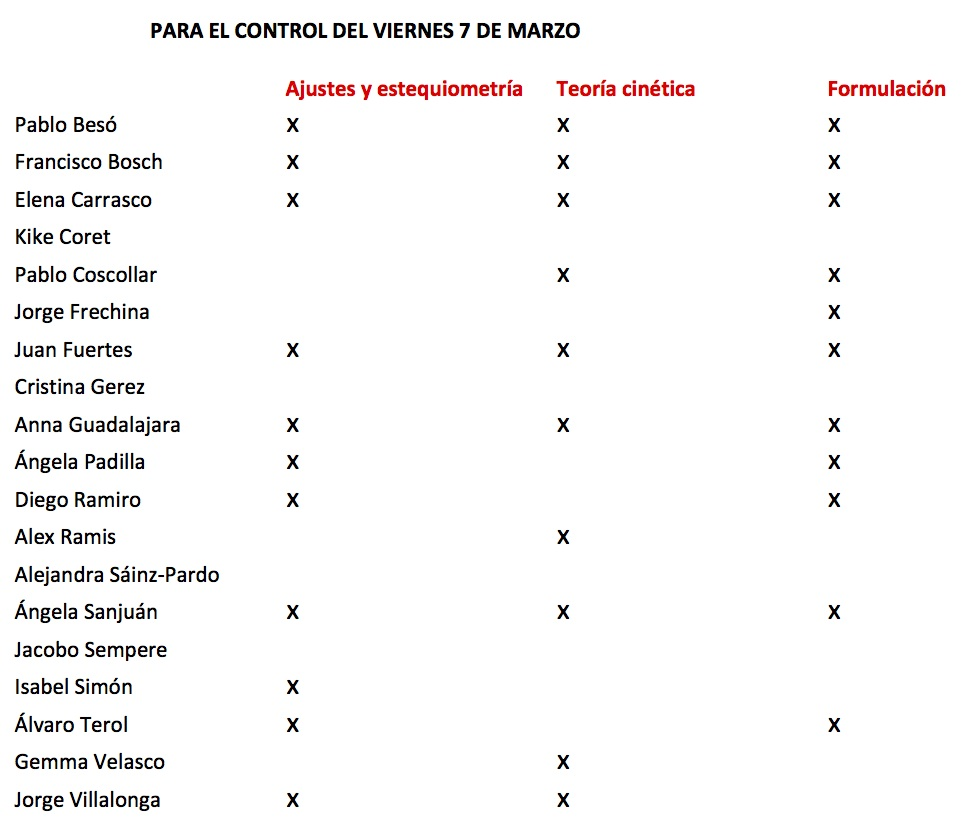
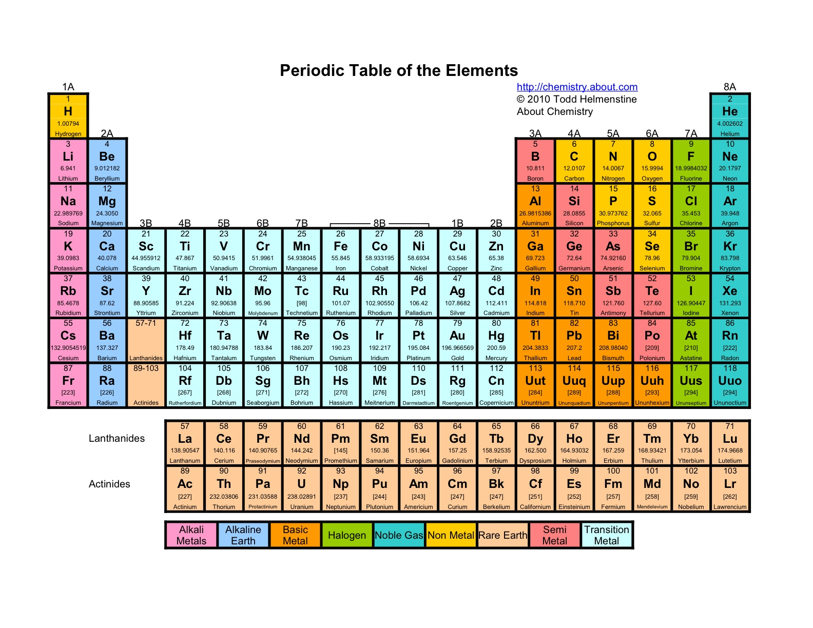

Formulación
Indicaciones para formular oxoácidos aquí.
Oxoácidos, ejercicio 7 (página VIII) aquí.
Recopilatorio, ejercicio 10 (página X) aquí. Con sales ternarias como las veremos la semana próxima.
Ejercicios de formulación: Pincha aquí.
El solucionario lo encontrarás aquí.
L'àtom segons Cantinflas (què opineu?)
Para la próxima semana...
Escoge un elemento de la tabla periódica y mira su vídeo relacionado en esta web para ponerlo en común en el aula.
Lectures recomanades
Una breu història de gairebé tot de Bill Bryson.
Por amor a la física, de Walter Lewin.
